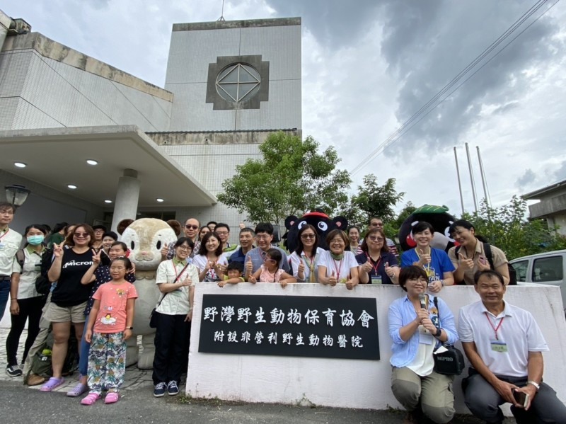
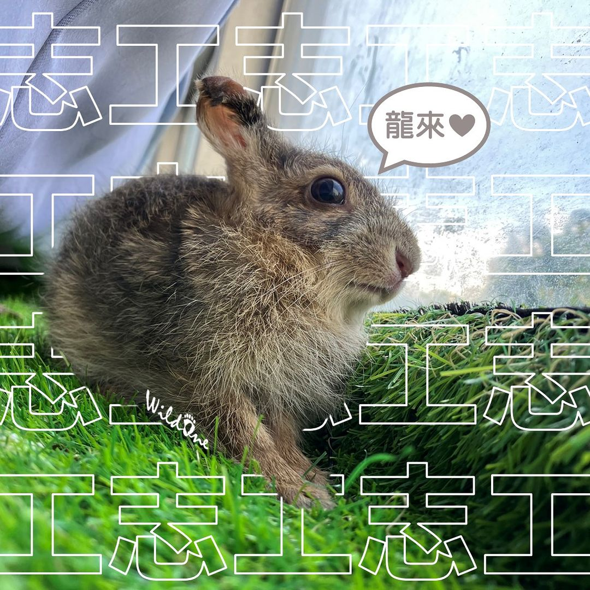
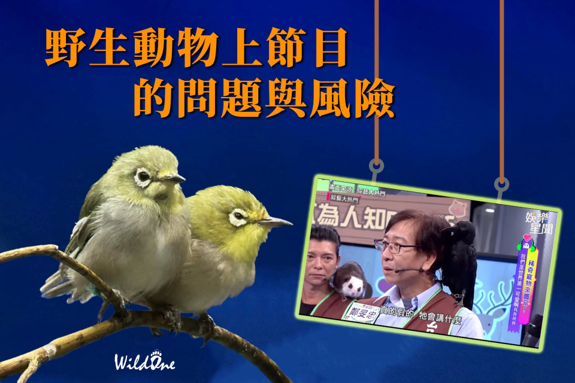
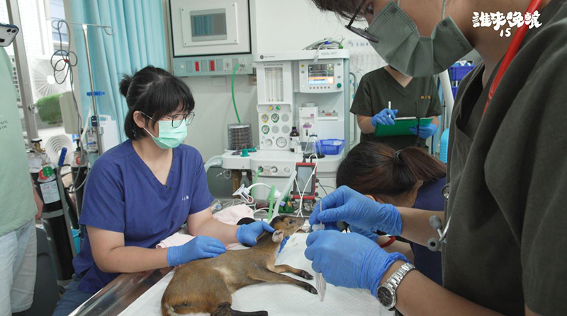
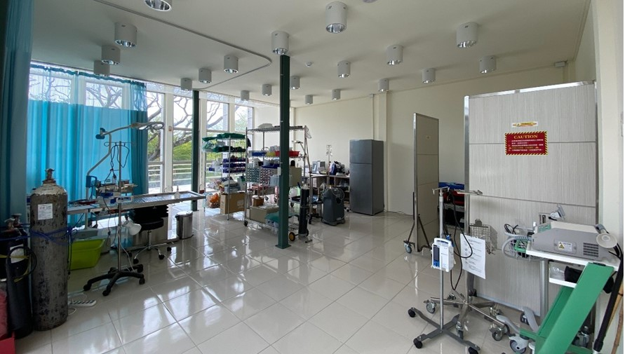
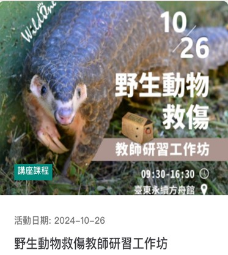
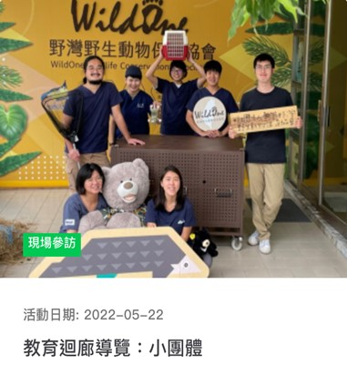
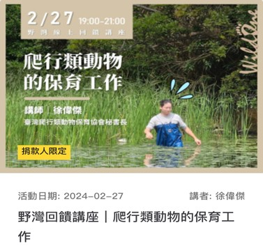
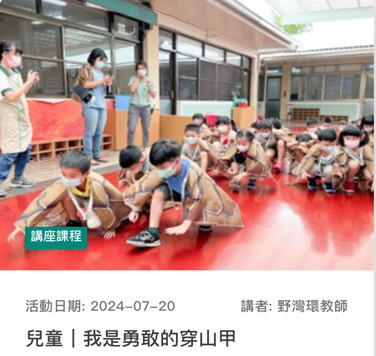

They help raise awareness and understanding of Taiwan's environmental issues, while also contributing to the fields of animal research and medical care.
WildOne
野灣野生動物保育協會
Introduction
They established Taiwan's first nonprofit wildlife hospital in Chishang, Taitung, in 2020.
Before this, wildlife in Eastern Taiwan had to be sent to Pingtung and Taipei for treatment.
The establishment of the organization not only reduced the rescue time for injured animals by half but also provided professional medical care and support. After receiving treatment, care, and rehabilitation training, the wildlife will be returned to nature, and their conditions will be continuously monitored.

Types of Charity
Wildlife Rescue and Conversion
Focusing on eastern Taiwan, providing comprehensive wildlife rescue and rehabilitation services.

Wildlife Research
Organizing training courses related to wildlife rescue and rehabilitation, as well as promoting ecological conservation efforts.

Promotion of Ecological Conservation
Integrating environmental education promotion, rescue and rehabilitation medical services, and further expanding resources to research and disease investigation efforts.
They regularly hold events and publish articles or reports about animals on their website. The reports include topics such as conservation activities, field investigations and research, and animal diseases.
Healthcare Operations and Equipment Procurement
Use funds to purchase medical supplies, animal feed, and equipment maintenance.


Professional Fees
Recruit veterinarians, caregivers, and environmental education staff.
(Wildone have team members lists on their website)
Educational Outreach Activities
They offer various animal-related advocacy and conservation activities, including on-site visits, lectures, hands-on experiences, and exclusive feedback seminars for donors.
The lectures are designed with different activities tailored to various age groups.

Lectures- Wildlife Rescue Workshops

On-site Visits

Seminars for Donors

Activities for children